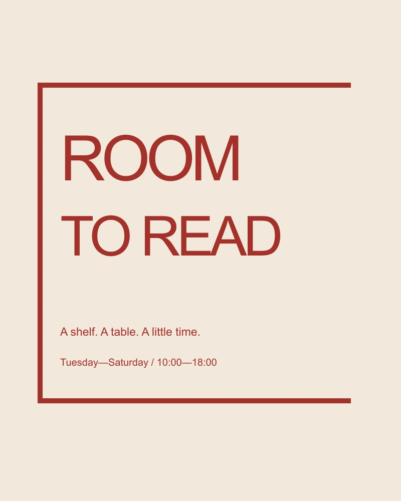
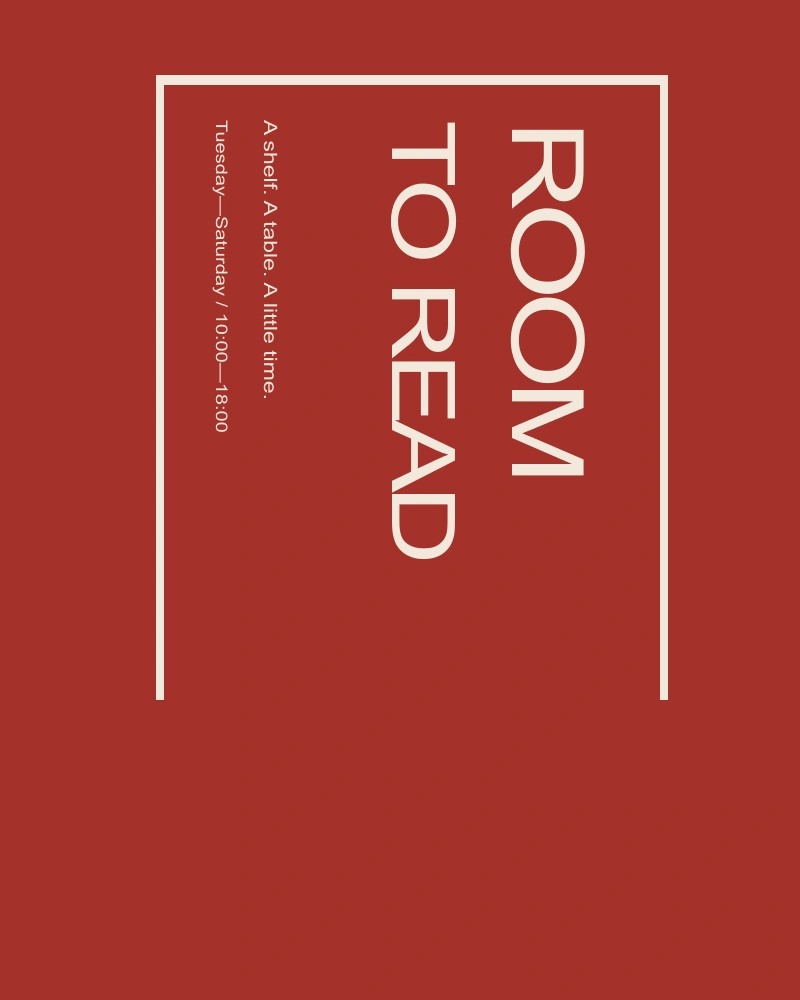

The starting point
Room to read imagines a small public space with shelves, tables and a weekly reading circle. The identity needed to work on a window, a folded schedule and a sign that could be made without specialist equipment.
A graphic decision
The word room becomes a frame without becoming a box. I aligned the letters to an open rectangle and left one side implied. The device suggests an invitation rather than a sealed institution. It remains readable when reproduced in one color.
A system, in use
A fixed set of horizontal positions connects the name, hours and programme titles. The system can be typeset in a basic document editor. The point is to make consistency available to the people running the space, not only to a designer with the original files.
At reading distance
The smallest application is a shelf label. It carries the same open-frame logic but omits the full name, because a label should help someone find a book rather than repeat the identity. Scale changes the amount of information, not just the size of the mark.

Try the spacing
A small live typesetting study. Change the phrase or the interval between letters.
Limits and next questions
This is an original fictional identity exercise. There is no claim of work for an existing reading room. A future test would involve making the schedule with ordinary office tools and checking whether the system survives that change in author.